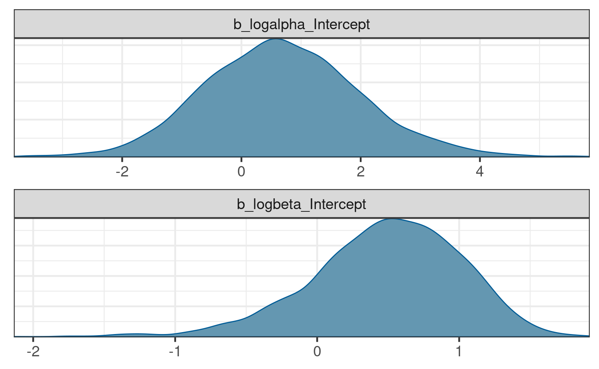

dlt_data <- dplyr::transmute(OncoBayes2::hist_SA, dose = drug_A, num_patients, num_toxicities)
knitr::kable(dlt_data)| dose | num_patients | num_toxicities |
|---|---|---|
| 1.0 | 3 | 0 |
| 2.5 | 4 | 0 |
| 5.0 | 5 | 0 |
| 10.0 | 4 | 0 |
| 25.0 | 2 | 2 |
In Oncology, a principal aim of a Phase-I trial is to study the relationship between dose and toxicity. Larger doses of the study drug are understood to increase the likelihood of severe toxic reactions known as dose-limiting toxicities (DLTs). The key estimand in such a trial is the maximum tolerated dose (MTD) or recommended dose (RD).
The class of trial designs that are typically employed are dose escalation designs. In order to protect patient safety, small cohorts of patients are enrolled sequentially, beginning with low dose levels of the study treatment, and monitored for DLTs. Once a dose level is found to be safe, the dose level may be escalated, and the subsequent cohort enrolled at a higher dose.
Whereas traditional designs such as the 3+3 design are based on algorithmic rules governing the decision for the subsequent cohort based on the outcome at the current dose, Bayesian model-based designs have proven to provide greater flexibility and improved performance for estimating the MTD, while protecting patient safety.
In the model-based paradigm for dose escalation, one develops a model for the dose-toxicity relationship. As DLT data accumulates on-study, the model is used to adaptively guide dose escalation decisions. Bayesian approaches are well-suited for this setting, due in part to the limited amount of available data (Phase-I studies are generally small).
In the simplest setting of a first-in-human (FIH) study of a new Oncology treatment, the relevant data are the doses, and associated counts of the number of patients evaluated and the number of patients with DLTs.
For dose levels indexed by \(i=1,\ldots, K\), we observe:
\[ d_i = \text{dose for the }i^\text{th}\text{ dose level} \] \[ n_i = \text{number of evaluable patients treated at }d_i \] \[ Y_i = \text{number of patients with a DLT at }d_i. \]
As an example:
dlt_data <- dplyr::transmute(OncoBayes2::hist_SA, dose = drug_A, num_patients, num_toxicities)
knitr::kable(dlt_data)| dose | num_patients | num_toxicities |
|---|---|---|
| 1.0 | 3 | 0 |
| 2.5 | 4 | 0 |
| 5.0 | 5 | 0 |
| 10.0 | 4 | 0 |
| 25.0 | 2 | 2 |
Neuenschwander, Branson, and Gsponer (2008) proposed the following simple Bayesian logistic regression model (BLRM).
\[ Y_i \, | \, \pi(d_i) \, \sim \, \mathrm{Binom}(n_i, \pi(d_i))\, \, \text{for }i=1,\ldots,K \] \[ \pi(d_i) \, | \, \alpha, \beta = \mathrm{logit}^{-1}\Bigl( \log\alpha + \beta\log \Bigl(\frac{d_i}{d^*}\Bigr) \Bigr) \] \[ \log\alpha \, \sim \, N(\mathrm{logit}(p_0), s_\alpha^2) \] \[ \log\beta \, \sim \, N(m_\beta, s_\beta^2). \]
Note:
library(dplyr)
library(brms)
library(OncoBayes2)
library(bayesplot)
library(posterior)
library(knitr)
library(BOIN)
library(ggplot2)
library(purrr)
library(here)
# instruct brms to use cmdstanr as backend and cache all Stan binaries
options(brms.backend="cmdstanr", cmdstanr_write_stan_file_dir=here("_brms-cache"))
# create cache directory if not yet available
dir.create(here("_brms-cache"), FALSE)
set.seed(8794567)Such a model is straightforward to implement in brms. Below, we use a nonlinear formula specification, in order to allow the prior for the intercept to be specified on the log scale.
# Reference dose
dref <- 50
# Standardize the covariate as in the model description
dlt_data <- mutate(dlt_data, std_dose = log(dose / dref))
# Model formula in brms
blrm_model <- bf(num_toxicities | trials(num_patients) ~ logalpha + exp(logbeta) * std_dose, nl = TRUE) +
lf(logalpha ~ 1) +
lf(logbeta ~ 1)
# Get the list of model parameters requiring prior specifications
get_prior(blrm_model, data = dlt_data, family = "binomial") prior class coef group resp dpar nlpar lb ub source
(flat) b logalpha default
(flat) b Intercept logalpha (vectorized)
(flat) b logbeta default
(flat) b Intercept logbeta (vectorized)# Set the prior as described in the previous section
blrm_prior <- prior(normal(logit(0.33), 2), nlpar = "logalpha") +
prior(normal(0, 0.7), nlpar = "logbeta")
# Compile and fit the model using brms
blrm_fit <- brm(blrm_model,
data = dlt_data,
family = "binomial",
prior = blrm_prior,
refresh = 0, silent = 0)Start samplingRunning MCMC with 4 sequential chains...
Chain 1 finished in 0.0 seconds.
Chain 2 finished in 0.0 seconds.Chain 3 Informational Message: The current Metropolis proposal is about to be rejected because of the following issue:Chain 3 Exception: binomial_logit_lpmf: Probability parameter[1] is -inf, but must be finite! (in '/tmp/Rtmp0749IU/model-a06d6ff209e3.stan', line 42, column 4 to column 50)Chain 3 If this warning occurs sporadically, such as for highly constrained variable types like covariance matrices, then the sampler is fine,Chain 3 but if this warning occurs often then your model may be either severely ill-conditioned or misspecified.Chain 3 Chain 3 finished in 0.0 seconds.
Chain 4 finished in 0.0 seconds.
All 4 chains finished successfully.
Mean chain execution time: 0.0 seconds.
Total execution time: 0.6 seconds.It is simple to get summary statistics and graphical displays of the posterior distributions for the model parameters.
# Summary statistics for log(alpha) and log(beta)
posterior_summary(blrm_fit) Estimate Est.Error Q2.5 Q97.5
b_logalpha_Intercept 0.6881521 1.2999627 -1.7060120 3.372981
b_logbeta_Intercept 0.4872278 0.5277053 -0.6747383 1.382841
lprior -3.1555746 1.0517939 -5.9296413 -2.194074
lp__ -6.3715219 1.0040109 -9.1454040 -5.384548# Posterior density estimates for log(alpha) and log(beta)
brms::mcmc_plot(blrm_fit, type = "dens", facet_args = list(ncol = 1))
However, these parameters are not themselves the primary target of inference for decision making. Rather the dose-DLT curve \(\pi(d)\) itself is estimated, in order to guide decision making about future dose levels.
Estimation of \(\pi(d)\) is similarly straightforward. For posterior summary statistics of \(\pi(d_i)\) at the observed dose levels \(i=1,\ldots,K\), one can use the poserior::summarize_draws function as follows:
# Posterior draws for pi(d)
dlt_data %>%
bind_cols(
posterior::summarize_draws(
posterior_linpred(blrm_fit, transform = TRUE),
c("mean", "sd", "quantile2")
) %>% select(-variable)
) %>%
kable(digits = 3)| dose | num_patients | num_toxicities | std_dose | mean | sd | q5 | q95 |
|---|---|---|---|---|---|---|---|
| 1.0 | 3 | 0 | -3.912 | 0.010 | 0.019 | 0.000 | 0.045 |
| 2.5 | 4 | 0 | -2.996 | 0.024 | 0.033 | 0.000 | 0.090 |
| 5.0 | 5 | 0 | -2.303 | 0.052 | 0.053 | 0.002 | 0.160 |
| 10.0 | 4 | 0 | -1.609 | 0.124 | 0.092 | 0.015 | 0.306 |
| 25.0 | 2 | 2 | -0.693 | 0.379 | 0.188 | 0.102 | 0.709 |
Next we illustrate estimation of \(\pi(d)\) on a fine grid of dose levels, in order to visualize the posterior for the continuous curve.
dose_grid <- seq(0, dref, length.out = 500)
# Posterior draws for pi(d)
dlt_rate_draws <- posterior_linpred(blrm_fit,
newdata = tibble(dose = dose_grid,
std_dose = log(dose / dref),
num_patients = 1),
transform = TRUE)
# Visualization using bayesplot
bayesplot::ppc_ribbon(y = rep(0, 500), yrep = dlt_rate_draws, x = dose_grid) +
guides(fill = "none", color = "none") +
labs(x = "Dose", y = "P(DLT)")Another key quantity for understanding risk of toxicity for patients is the predictive distribution for DLTs in a future, unobserved cohort:
\[ \Pr(\tilde Y = y \, | \, y_{obs}) = \int \Pr(\tilde Y = y \, | \, \theta) \, d\pi(\theta|y_{obs}). \]
One can easily obtain such information from brms. Suppose we wished to know the predictive distribution for the DLT count in new cohorts of size 4 at a set of candidate dose levels, \(d=10, 25, 50\).
candidate_doses <- tibble(
dose = c(10, 25, 50),
std_dose = log(dose / dref),
num_patients = 4
)
predictive_draws <- posterior_predict(blrm_fit, newdata = candidate_doses)
count_freq <- function(x, breaks = 0:4){
x <- factor(x, breaks)
setNames(
prop.table(table(x)),
paste0("P(", breaks, " DLTs)")
)
}
kable(bind_cols(
candidate_doses,
summarize_draws(predictive_draws, count_freq) %>% select(-variable)
), digits = 3)| dose | std_dose | num_patients | P(0 DLTs) | P(1 DLTs) | P(2 DLTs) | P(3 DLTs) | P(4 DLTs) |
|---|---|---|---|---|---|---|---|
| 10 | -1.609 | 4 | 0.637 | 0.271 | 0.075 | 0.013 | 0.003 |
| 25 | -0.693 | 4 | 0.237 | 0.299 | 0.248 | 0.162 | 0.054 |
| 50 | 0.000 | 4 | 0.082 | 0.156 | 0.220 | 0.273 | 0.270 |
One common framework for guiding dosing decisions using a model-based dose escalation framework is known as Escalation With Overdose Control (EWOC). Decisions are based on an MTD threshold above which constitutes excessive toxicity \(\pi_{over}\) (typically \(\pi_{over}\)), and a so-called feasibility bound \(c\):
\[ \text{EWOC satisfied at }d \iff \Pr( \pi(d) > \pi_{over}) \leq c \]
Furthermore, we often define another cutoff \(\pi_{targ}\), and summarize the posterior probabilities for three intervals,
\[ \Pr(d\text{ is an underdose}) = \Pr( \pi(d) < \pi_{targ} ) \] \[ \Pr(d\text{ is in the target range}) = \Pr( \pi_{targ} \leq \pi(d) < \pi_{over} ) \] \[ \Pr(d\text{ is an overdose}) = \Pr( \pi(d) > \pi_{over} ),\]
and evaluate EWOC by checking if the last quantity exceeds \(c\).
For the set of candidate doses, the EWOC criteria can be evaluated as follows:
pi_target <- 0.16 # motivated by 3+3 design (~ 1/6)
pi_over <- 0.33 # motivated by 3+3 design (~ 1/3)
c <- 0.25
raw_draws <- posterior_linpred(blrm_fit, newdata = candidate_doses, transform = TRUE)
draws <- posterior::as_draws_matrix(raw_draws)
interval_probs <- posterior::summarize_draws(
draws,
list(
function(x){
prop.table(table(cut(x, breaks = c(0, pi_target, pi_over, 1))))
}
)
)
bind_cols(
select(candidate_doses, dose),
select(mutate(interval_probs, ewoc_ok = `(0.33,1]` <= c), -variable)
) %>%
kable(digits = 3)| dose | (0,0.16] | (0.16,0.33] | (0.33,1] | ewoc_ok |
|---|---|---|---|---|
| 10 | 0.710 | 0.254 | 0.036 | TRUE |
| 25 | 0.129 | 0.309 | 0.562 | FALSE |
| 50 | 0.029 | 0.108 | 0.864 | FALSE |
brms is easily capable of handling this simple logistic regression model, and producing all the posterior summaries necessary for guiding a dose escalation trial with it. There are, of course, many extensions and complications to this basic methodology that we encounter frequently. The OncoBayes2 package is specifically tailored to this class of regression models, and covers all the typical use-cases. However, the approach described above for brms can be extended as well, for example to handle dose escalation for drug combinations, rather than single agents. See [Advanced Topics section on combination dose escalation][Combination dose escalation].
An alternative to designs based on the BLRM is the so-called Bayesian Optimal INterval (BOIN) design (see Yan et al, 2020). In this exercise we will explore how the estimation of the MTD differs between the BOIN approach vs the BLRM vs a flexible monotone-regression approach that can be easily implemented in brms.
Suppose are planning a trial with the following provisional doses.
provisional_doses <- tribble(
~dose_id, ~dose, ~prob_dlt,
1, 1, 0.05,
2, 2, 0.1,
3, 4, 0.2,
4, 8, 0.3,
5, 16, 0.5
)To generate data for comparing the MTD estimation methods, we begin by simulating a trial acording to true DLT rates prob_DLT above, and according to BOIN decision rules for escalation and de-escalation. We starting with dose = 2, and enroll cohorts of size 4 until either 12 cohorts have been enrolled, or more than 12 patients have been enrolled at any one dose. Below is some code that simulates such a trial.
library(BOIN)
# Function to simulate a BOIN trial
simulate_BOIN <- function(starting_dose_id,
provisional_doses,
cohort_size,
num_cohorts,
num_patients_stop,
target_dlt_rate = 0.25,
low_dlt_rate = 0.6 * target_dlt_rate,
high_dlt_rate = 1.4 * target_dlt_rate){
BOIN_decisions <- BOIN::get.boundary(
target = target_dlt_rate,
ncohort = num_cohorts,
cohortsize = cohort_size,
n.earlystop = num_patients_stop,
p.saf = low_dlt_rate,
p.tox = high_dlt_rate
)
current_dose_id <- starting_dose_id
dlt_data <- provisional_doses %>%
mutate(
num_patients = 0,
num_toxicities = 0,
eliminated = FALSE
)
cohort_history <- dlt_data[0,]
cohort_time <- 1
while(cohort_time <= num_cohorts){
current_dose_data <- dlt_data[current_dose_id,]
true_dlt_rate <- dlt_data$prob_dlt[current_dose_id]
num_toxicities <- rbinom(1, cohort_size, true_dlt_rate)
current_dose_data$num_patients <- current_dose_data$num_patients + cohort_size
current_dose_data$num_toxicities <- current_dose_data$num_toxicities + num_toxicities
new_data <- mutate(current_dose_data,
num_patients = cohort_size,
num_toxicities = !! num_toxicities)
cohort_history <- rbind(
cohort_history,
new_data
)
dlt_data[current_dose_id, ] <- current_dose_data
if(current_dose_data$num_patients >= num_patients_stop) break
boundaries <- setNames(
BOIN_decisions$full_boundary_tab[-1, current_dose_data$num_patients],
NULL
)
comparison <- c(
escalate = current_dose_data$num_toxicities <= boundaries[1],
stay = current_dose_data$num_toxicities > boundaries[1] & current_dose_data$num_toxicities < boundaries[2],
de_escalate = current_dose_data$num_toxicities >= boundaries[2],
eliminate = current_dose_data$num_toxicities >= boundaries[3]
)
decision <- names(comparison[max(which(comparison))])
if(decision == "stay"){
next_dose_id <- current_dose_id
} else if(decision == "escalate"){
next_dose_id <- current_dose_id + 1
} else{
next_dose_id <- current_dose_id - 1
}
if(decision == "eliminate") dlt_data$eliminated[current_dose_id] <- TRUE
if(next_dose_id > nrow(dlt_data)){
next_dose_id <- nrow(dlt_data)
}
if(dlt_data$eliminated[next_dose_id]){
next_dose_id <- next_dose_id - 1
}
if(next_dose_id < 1) break
current_dose_id <- next_dose_id
cohort_time <- cohort_time + 1
}
mtd <- BOIN::select.mtd(
target = target_dlt_rate,
npts = dlt_data$num_patients,
ntox = dlt_data$num_toxicities,
p.tox = high_dlt_rate
)
return(
brms:::nlist(
dlt_data,
cohort_history,
mtd
)
)
}# simulate a trial
withr::with_seed(
-1423048045,
{
sim <- simulate_BOIN(
starting_dose_id = 2,
provisional_doses = provisional_doses,
cohort_size = 4,
num_cohorts = 12,
num_patients_stop = 13,
target_dlt_rate = 0.25
)
}
)The output of this call include:
sim$dlt_data # simulated cohort-by-cohort data
sim$mtd # isotonic regression to determine the MTD; p_est shows the resultIn the BOIN design, the MTD is selected based on isotonic regression of beta-binomial posterior quantiles (see Yan et al, 2020).
Now for the exercise:
Use brms to fit a BLRM similar to these data with reference dose \(d^* = 16\) and the same prior as described in this section.
In brms, the mo() function is used to specify an ordinal covariate with a monotone relationship with the response. Fit a model in which the log odds of DLT (family = binomial("logit")) is a monotone function of the dose_id variable defined in dlt_data (i.e. the covariate is an integer sequence indexing the provisional doses). How do these estimates compare to the estimates from the BLRM?
Compare the estimates of DLT rate (e.g. posterior means and quantiles) by dose: for the models in #1 and #2, and as estimated by BOIN in sim$mtd$p_est. Does the BOIN MTD differ from the MTD that would result from taking the highest dose satisfying EWOC from models #1 and #2?